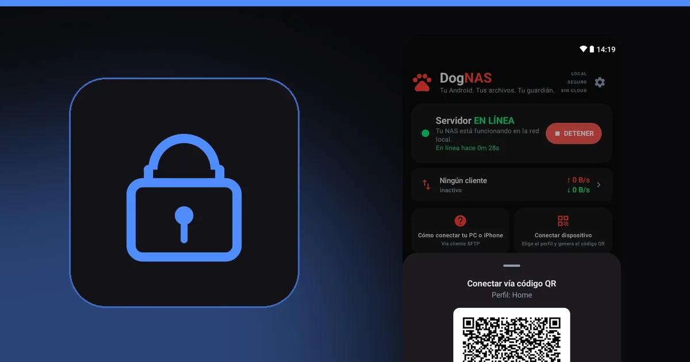

Qué es SFTP y cómo acceder a un servidor de archivos en Android

Si alguna vez viste "SFTP" y seguiste de largo, esta guía es para ti. La sigla asusta, pero la idea es simple: una forma segura de enviar y buscar archivos en otra computadora por la red. Es lo que DogNAS usa para entregar los archivos de tu servidor a los demás dispositivos de la casa.
Qué es SFTP
SFTP significa SSH File Transfer Protocol: transferencia de archivos sobre SSH. SSH es el protocolo que crea una conexión cifrada entre dos dispositivos. SFTP usa esa conexión para listar carpetas, subir, descargar, renombrar y borrar archivos.
En la práctica, esto significa que lo que viaja por la red no puede ser leído por otros dispositivos que estén en el mismo Wi-Fi.
SFTP, FTP y SMB: ¿qué diferencia hay?
- FTP es antiguo y, por defecto, envía todo sin cifrar, incluida la contraseña. No es la mejor opción en ninguna red.
- SFTP se parece a FTP para quien lo usa, pero corre sobre SSH y está cifrado. No tiene relación técnica con FTP, a pesar del nombre parecido.
- SMB es el uso compartido de carpetas de Windows. Es práctico en una red local, pero suele ser más molesto de configurar fuera de Windows.
Para qué sirve en casa
- guardar y acceder a fotos, videos y documentos en un servidor de la casa;
- enviar archivos de la PC al celular y viceversa;
- recibir archivos de cámaras, NVR y automatizaciones que envían por SFTP;
- copiar archivos de otras computadoras con scripts y herramientas como rclone.
Cómo acceder a un servidor Android con DogNAS
DogNAS convierte un celular o tablet Android (7.0 o más reciente) en un servidor SFTP en tu red Wi-Fi. Cada dispositivo recibe una credencial propia, que puedes revocar en cualquier momento, y la clave del servidor se fija en el emparejamiento, para que sepas que hablas con el servidor correcto.
- Instala e inicia el servidor en el Android que guardará los archivos.
- En el celular, usa DogNAS Client Lite: apunta la cámara al código QR del perfil e ingresa el PIN.
- En la computadora, abre un cliente SFTP como FileZilla, WinSCP o Cyberduck y usa los datos de conexión que el servidor muestra en la pantalla "Cómo conectar tu PC o iPhone".
- Navega, arrastra y suelta archivos. Para automatizaciones, herramientas como rclone y el
sftpde OpenSSH también funcionan.


Lo que SFTP no hace
- No es una copia de seguridad. Solo transporta archivos. Mantén una copia independiente de lo importante.
- Solo funciona si la red lo permite. El servidor y tu dispositivo deben estar en la misma red, y el servidor debe estar encendido.
- Cifrar el camino no protege al servidor. Usa un PIN y contraseñas fuertes, y revoca las credenciales de dispositivos que ya no usas.
En resumen
SFTP es una forma segura y universal de acceder a archivos por la red, y casi todo programa de transferencia lo entiende. Con DogNAS tienes un servidor SFTP en Android sin tocar el router. Para ver el paso a paso completo, lee cómo convertir un Android viejo en un servidor de archivos.